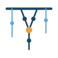

Brand board v1 · Evidencia que decide.
Sistema de versiones
Apilado · LinkedIn, portadas

Símbolo · sellos, marca de aguaMínima · favicon ≤32px
Inverso · fondos oscuros
Para trabajo de diseño: assets/master_yachay.svg (lienzo con todo, sin dependencia de fuentes) y assets/logo_*_contornos.svg.
Paleta
Azul petróleo
#1B4965primario · logo, títulosAzul acero
#5FA8D3gráficos, enlacesÁmbar andino
#E8A13Dacento · ≤10% por piezaGris pizarra
#2E3440textoHueso
#F7F5F0fondosAzul niebla
#5F7A8Cdescriptor, metadatosTipografía
Source Serif 4 — títulos y marca
Source Sans 3 — cuerpo de texto, tablas y UI.
JetBrains Mono — código en entregables reproducibles
Los SVG con <text> requieren las fuentes instaladas (Google Fonts) para render fiel; las versiones _contornos no dependen de fuentes.
Reglas de uso
Sí
- Lockup horizontal como versión por defecto
- Apilado en formatos cuadrados (LinkedIn) y portadas
- Inverso sobre azul petróleo u oscuro; ámbar y acero no cambian
- Área de respeto: la altura de la "Y" del símbolo
- Nudo cuadrado ámbar como bullet en documentos
No
- No estirar, rotar ni cambiar colores
- No usar sombras, degradados ni efectos
- No usar el Telar completo por debajo de 32px (usar la mínima)
- No superar ~10% de ámbar en una pieza
- No colocar sobre fondos con ruido visual